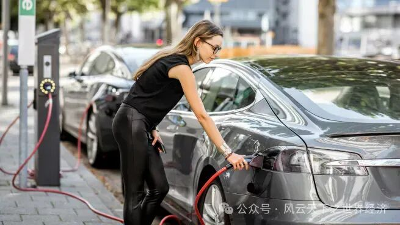
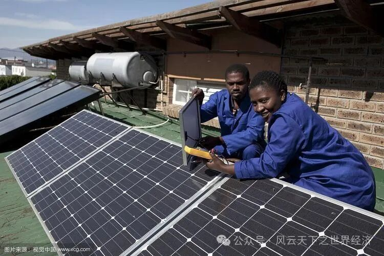

我们用Title/Date/Event/Insight/Voices/Observer来还原此时此刻的世界经济

新技术、不断变化的消费者偏好正在重塑汽车行业
- Title 奔向美国的新能源汽车制造商 - Date 2024年3月13日
- Event
汽车制造商大众表示，它将在南卡罗来纳州建立一家组装电动汽车的工厂，并将在北美开设一家生产电池的工厂。这家德国汽车制造商暂停了在东欧建立电池厂的计划，因为它在等待欧盟是否会按照美国的《通胀削减法案》对电动汽车生产提供补贴。
- Insights
大众这家德国汽车制造商成为了美国《通胀削减法案》颁布之后，又一家宣布要在北美投资建厂电动汽车组装与电池生产的汽车厂商。就在前不久，宝马和特斯拉才刚刚官宣了自己在墨西哥建厂的计划。
让北美成为众多新能源汽车制造商趋之若鹜的埋金之地的，是美国在去年八月签署的《通胀削减法案》。虽然名为“削减通胀”，法案实际上对新能源行业进行了大幅度的补贴：对于在北美组装的电动汽车，其消费者可以获得最高达7500美元的税收抵免。对于整个电动汽车供应链的本土化投资，比如电池和材料，该法案同样也提供高额支持。“利诱”之下，美国电动汽车相关产业的投资一时达到新高。电动汽车产业链向北美转移拢聚。
毫无疑问，这份以缩减通胀为名的法案，带有强烈的单边主义与贸易保护主义色彩，它进一步揭露了美国推动产业链重构与回流的野心和企图。
涉及电动汽车产业链布局的欧洲、韩国日本和中国都或多或少受此法案的冲击。以汽车制造为重要产业组成的欧盟，焦虑尤甚。“去工业化”的恐惧如同悬于欧洲头顶之重剑。
官宣在北美建厂的同期，大众集团还宣布暂停在欧洲建造六家电池工厂的计划。汽车制造商和其他投资者们在观望：欧洲是否也会以其人之道反击，颁布“欧盟通胀削减法案”，拉开一场贸易的补贴之战。
- Voice
大众Scout品牌首席执行官Scott Keogh表示：“我们简单地认为这有点像淘金热，现在是在美国建厂的最佳时机。”
乐天证券经济研究所（Rakuten Securities Economic Research Institute）的Masayuki Kubota表示：“如果投资集中在美国，会有人担心，核心的脱碳技术和工业基础设施可能会出现空心化现象。”

在南非铺设的光伏发电装置
- Title 电力困境中的南非——能源转型与漫长阵痛 - Date 2024年3月15日
- Event
南非总统西里尔·拉马福萨宣布了一项行动计划，以解决该国日益严重的能源危机。其中包括放宽立法和环境要求，以加快私人投资和提高发电能力。
- Insights
2022年第四季度，南非GDP同比下降了1.3%，这是个长久以来在电力危机中苦苦挣扎的国家。今年年初，因为频繁限电，南非一度宣布进入“国家灾难状态”，每日的最高限电时长甚至超过12小时。
南非的电力市场长期保持着近乎单调的状态：垄断的供电商Eskom独自承担了全国约95%的发电量。这场旷日持久的电力危机，主要原因在于南非的能源结构单调，过于依赖煤炭等传统化石燃料，而煤炭发电厂由于厂房老化时常需要维修，供电能力不足。与此同时，Eskom的管理腐败与俄乌冲突使困境雪上加霜。
为缓解危机，南非政府将目光转向鼓励个人和私人企业参与清洁能源部署。政府先后出台了一系列鼓励光伏、风电和锂电池储能的新政策：向符合条件的个人和企业提供清洁能源部署补贴与激励，降低直至废除分布式能源建设审批门槛。中国的光伏、锂电和风电企业也深度参与到了南非这一轮清洁能源投资中。
风光储的快速部署，大大减少了Eskom白天需要满足的剩余负荷。但即使光伏装机容量满负荷发电，其实际新增发电量也将只能达到传统火电理论装机容量的20%左右。南非的清洁能源部署还有很大的增长空间，需求缺口仍未解决。
事实上，能源转型是一个漫长的过程。这期间，会充斥传统能源与清洁能源、国营与私营企业等不同利益实体的博弈。每个已经完成或正在经历能源转型的国家都有相似又不尽相同的体验。属于南非的转型阵痛可能还要很久，但换个角度，南非市场上空短期内无法被填满的巨大需求缺口也意味着一扇长期开放的投资窗口。
- Voice
南非开普敦大学初级研究员Wikus Kruger：“我们可能会看到更多的可再生能源更快地进入电网。许多商业和工业客户，如矿山、购物中心和仓库，已经安装了大量可再生能源容量。由于这些企业现在可以向南非国家电力公司出售这些能源，因此它们有动机最大限度地提高发电能力。这将产生巨大的影响。”
新成立的中国国家金融监督管理总局（摄于5月）
- Title 由分权转向集权是逆趋势吗？ - Date 2024年3月7日
- Event
中国政府宣布对金融业的监管进行全面改革，将在原有中国银行保险监督管理委员会基础上成立一个新的机构（国家金融监督管理总局）取而代之，并相应调整中国证券监督管理委员会职责及地方金融监管体制。本次改革的目的是整合众多监管机构的业务。
- Insights
复杂的国际局势使得防范金融系统性风险成为各国的重点任务。中国在本月召开了人民代表大会，政府报告中，“金融”一词共被提及19次，成为高频关键词，也反映出其在“金融安全”问题上的高度重视。
本次监管改革，总体方向可以概括为“由分权转向集权”。在此之前，中国的监管格局为“一行两会”，两会（银保监会和证监会）各自监管贷款、保险和证券的相关业务，颇有“各扫门前雪”之态势，无法很好适配和管理日益复杂多元的混合经营业务，使得“影子银行”和资管产品快速发展。本次金融监管改革，赋予了国家金融监督管理总局更高的权力，方便其对混业业务统筹监管。
在我们的认知直觉里，现代化的发展趋势总是由集权转向分权，后者常常与“民主”、“公正”的价值相互关联。但权力的分散也会带来责任分离之虞。金融产品的集成化需要监管相应的中心化，因此由分权转向集权是与时俱进、顺应趋势的结果。
我们还尚需时间见证与检验中国此次改革的效果，但可以预见：消费者投资风险会有所降低；部分金融机构的风险将在未来一段时间逐渐释放。
- Voice
中国人民大学中国资本市场研究院院长吴晓求答记者问时说：“金融监管改革也表明金融在未来中国发展中的地位、重要性，越来越明显。我们这么大的经济体，正在迈向现代化的过程中，金融的现代化非常重要。”